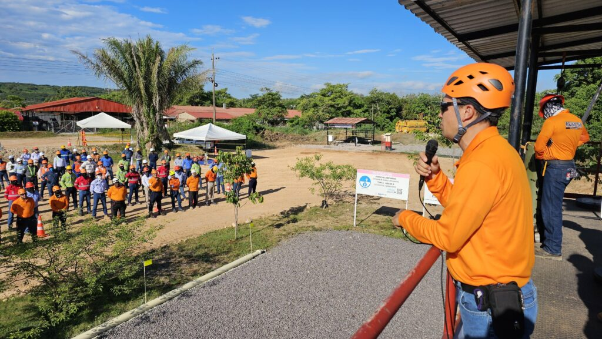
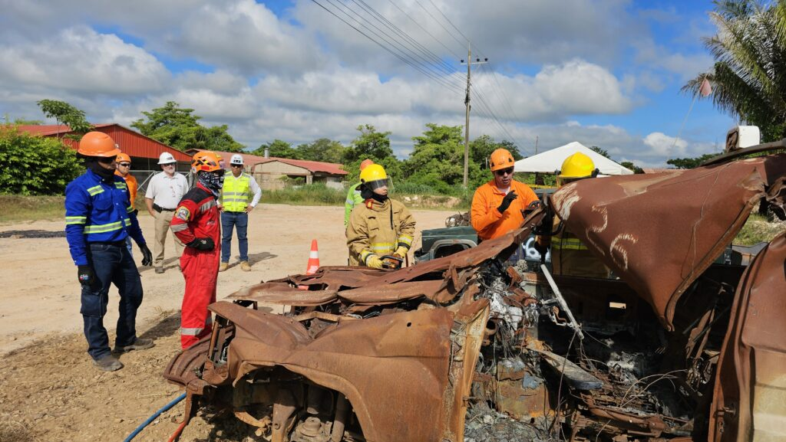

¡Lo nuevo!
Brigadas de emergencia: mitos o verdades
¿Qué son?
Las brigadas de emergencia son grupos de trabajadores capacitados y organizados para prevenir, controlar y atender situaciones de emergencia dentro de una organización. Su función es proteger la vida de las personas, la salud de los trabajadores y los bienes de la empresa antes, durante y después de un incidente.
Están conformadas por un jefe de brigada, encargado de la coordinación y gestión de recursos, y por brigadistas que participan en simulacros, inspecciones y atención directa de las emergencias. Su número y distribución dependen de la cantidad de trabajadores y de los turnos de la organización.
En Colombia, las brigadas de emergencia forman parte de las obligaciones del empleador dentro del Sistema de Gestión de Seguridad y Salud en el Trabajo (SG-SST), de acuerdo con el Decreto 1072 de 2015 y la Resolución 0312 de 2019, que establecen los requisitos para la prevención, preparación y respuesta ante emergencias.


¿Quiénes la conforman?
La brigada de emergencia está conformada por trabajadores voluntarios capacitados y organizados para prevenir, controlar y responder ante situaciones de emergencia dentro de una organización. Su principal objetivo es proteger la vida, la salud y la seguridad de los trabajadores mediante acciones de prevención y atención oportuna.
La estructura de la brigada incluye dos figuras principales:
- Jefe de brigada: lidera y coordina las actividades del equipo, actualiza los planes de emergencia y simulacros, organiza la brigada, administra los recursos y supervisa el mantenimiento de los equipos.
- Brigadistas: son los encargados de ejecutar las acciones operativas durante las emergencias. Deben contar con compromiso, capacidad de reacción, liderazgo, serenidad y condiciones físicas adecuadas para cumplir sus funciones.
Entre las principales funciones de los brigadistas se encuentran:
- Participar en simulacros y entrenamientos.
- Inspeccionar áreas de trabajo para identificar riesgos.
- Verificar y mantener los equipos de emergencia.
- Capacitar y orientar al personal sobre medidas de prevención.
- Actuar de manera rápida y eficaz ante una emergencia.
- Facilitar el traslado de personas afectadas cuando sea necesario.
- Apoyar la recuperación de las actividades normales de la empresa después de una contingencia.
- Reportar el uso de materiales y recursos empleados durante la atención de la emergencia.
Tipos de brigadas de emergencia
Las brigadas de emergencia se organizan según los riesgos y necesidades de cada empresa, permitiendo una respuesta más eficiente ante diferentes situaciones de peligro.
Brigada de evacuación
Se encarga de dirigir la salida segura, rápida y ordenada de trabajadores, visitantes y contratistas durante una emergencia. Guía a las personas por las rutas de evacuación, apoya a quienes requieran ayuda especial y verifica que todos lleguen al punto de encuentro establecido.
Brigada de primeros auxilios
Brinda atención inmediata a las personas lesionadas o afectadas durante una emergencia. Realiza valoraciones iniciales, aplica primeros auxilios básicos, controla hemorragias, inmoviliza lesiones y apoya el traslado seguro de los heridos.
Brigada contra incendios
Especializada en la prevención, control y extinción inicial de incendios. Conoce el manejo de extintores y demás equipos, identifica riesgos de combustión y colabora con los cuerpos de bomberos cuando la situación lo requiere.
Brigada de comunicación y alarma
Gestiona la información durante una emergencia. Activa los sistemas de alarma, coordina la comunicación entre las diferentes brigadas, notifica a los organismos de socorro externos y mantiene el registro de las comunicaciones realizadas.
Segundo servicio
¿Cómo crear una brigada? Acá te contamos
- Identificación de riesgos: realiza una evaluación de riesgos en tu empresa para determinar las posibles emergencias que podrían ocurrir.
- Selección del personal: elige empleados voluntarios y comprometidos para formar parte de la brigada. Es importante que estos trabajadores tengan disponibilidad y disposición para recibir la capacitación necesaria.
- Capacitación: proporciona formación en primeros auxilios, evacuación, uso de extintores y otros procedimientos de emergencia. Puedes contar con la asesoría de especialistas en seguridad laboral.
- Equipamiento: asegúrate de que la brigada tenga acceso a equipos de emergencia, como botiquines, extintores y sistemas de comunicación.
- Simulacros: realiza simulacros periódicos para mantener a la brigada preparada y evaluar la efectividad de los procedimientos.
Para que este proceso tenga resultados sostenibles, la conformación de la brigada debe apoyarse en criterios técnicos, incluyendo perfil físico y emocional de los brigadistas, distribución por áreas, cobertura por turnos y conocimiento de los riesgos específicos de la operación. También es importante documentar roles, responsabilidades y frecuencia de entrenamiento, porque esto facilita el seguimiento del desempeño y el cumplimiento de estándares internos.
Tercer servicio
¿Qué impacto tienen las brigadas?
- Primeros auxilios: brindan atención inicial a las personas lesionadas, coordinan la asistencia médica necesaria, apoyan el traslado de heridos y garantizan la disponibilidad de equipos e insumos para la atención.
- Evacuación: orientan y coordinan la salida ordenada y segura de las personas hacia zonas seguras, verificando que todos abandonen las áreas afectadas y reportando cualquier novedad.
- Control de incendios: identifican riesgos de incendio, conocen el uso de los equipos de extinción y actúan de manera oportuna para controlar conatos o colaborar con otros organismos de respuesta.
- Búsqueda y rescate: realizan labores de localización y rescate de personas atrapadas o afectadas durante una emergencia, utilizando equipos adecuados y procedimientos seguros.
- Procedimientos Operativos Normalizados (PON): aplican protocolos especializados para atender emergencias complejas relacionadas con los procesos, tecnologías y riesgos específicos de la organización, requiriendo capacitación y recursos más especializados.


Cuarto servicio
¿La normativa?
La conformación y funcionamiento de las brigadas de emergencia en Colombia están respaldados principalmente por el Decreto 1072 de 2015 y la Resolución 0312 de 2019, normas que hacen parte del Sistema de Gestión de Seguridad y Salud en el Trabajo (SG-SST).
Decreto 1072 de 2015
Establece la obligación de las empresas de implementar medidas para la prevención, preparación y respuesta ante emergencias. Exige identificar amenazas y vulnerabilidades, definir procedimientos de actuación, designar personal responsable, capacitar a los trabajadores, realizar simulacros periódicos y garantizar los recursos necesarios para una respuesta efectiva.
Resolución 0312 de 2019
Define los estándares mínimos del SG-SST que deben cumplir los empleadores. Entre ellos, la elaboración y actualización del plan de emergencias, la conformación de brigadas, la capacitación de los brigadistas, la dotación de equipos adecuados, la realización de simulacros y la evaluación continua de la capacidad de respuesta de la organización.
Sexto servicio
Testimonios de nuestro servicio
“Voces de la seguridad”
(Aquí va un video que estamos editando)
“Detrás de cada simulacro hay historias reales de quienes protegen la vida y el entorno.”
Séptimo servicio
¿Son importantes las brigadas de emergencia?
Las brigadas de emergencia son fundamentales para garantizar una respuesta rápida y organizada ante situaciones críticas dentro de una empresa. Su capacitación y preparación permiten actuar de manera eficiente, reduciendo riesgos para las personas y minimizando daños materiales.
Entre sus principales beneficios se encuentran:
- Respuesta oportuna: permiten actuar de forma inmediata ante emergencias, ayudando a controlar la situación y proteger la vida de las personas.
- Reducción de daños: contribuyen a disminuir las consecuencias de incendios, accidentes, evacuaciones u otros eventos de riesgo.
- Cumplimiento legal: ayudan a las organizaciones a cumplir con las exigencias de Seguridad y Salud en el Trabajo (SST).
- Fortalecimiento de la cultura de seguridad: promueven la prevención y generan mayor conciencia sobre los riesgos laborales.
- Mayor confianza y bienestar: los trabajadores se sienten más seguros al saber que existe un equipo preparado para atender emergencias.
- Preparación integral: permiten a la empresa estar lista para enfrentar diferentes escenarios, como incendios, emergencias médicas, accidentes o desastres naturales.
- Desarrollo de competencias: los brigadistas adquieren conocimientos y habilidades que fortalecen su crecimiento personal y profesional.
- Mejora de la imagen corporativa: reflejan el compromiso de la organización con la seguridad, la salud y el bienestar de sus trabajadores.
Desafíos para su implementación
Capacitación continua
La capacitación no debe ser un evento único. Es crucial que los miembros de la brigada reciban formación continua para mantenerse actualizados y mejorar sus habilidades.
Comunicación eficaz
Una buena comunicación es esencial durante una emergencia. Establece canales de comunicación claros y efectivos para que todos los miembros de la brigada puedan coordinarse adecuadamente.
Evaluación y mejora
Después de cada simulacro o emergencia, evalúa el desempeño de la brigada y realiza mejoras. Identifica los puntos fuertes y las áreas que necesitan optimización.
La brigada de emergencia SST debe someterse a revisiones periódicas para verificar si la capacitación, la asignación de funciones y el equipamiento siguen siendo adecuados para los riesgos actuales de la empresa. Los simulacros, las actas, los tiempos de respuesta y los hallazgos posteriores a cada ejercicio son insumos clave para ajustar el plan y mantener la capacidad de respuesta en un nivel funcional.
¿Listos para conformar tu brigada?
Te acompañamos desde el diagnóstico hasta los simulacros.